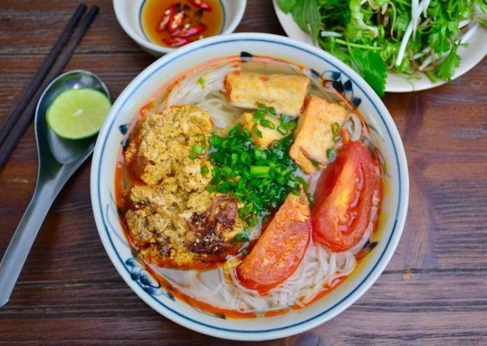
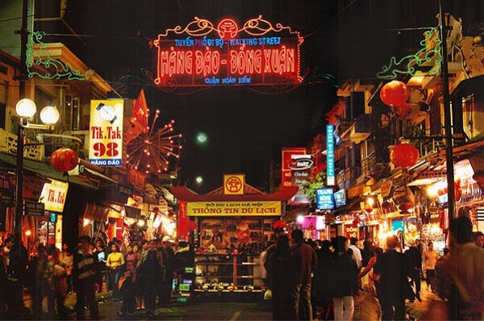
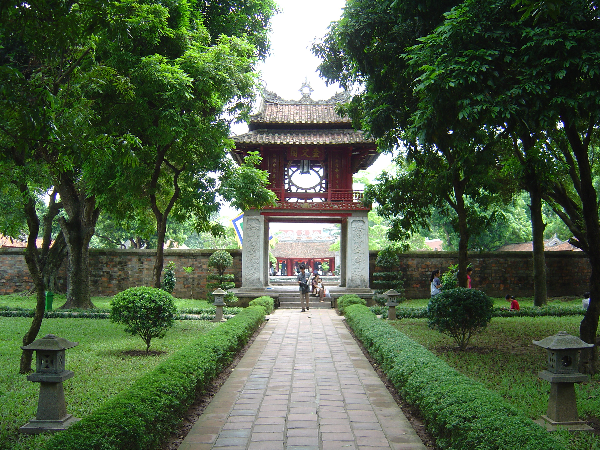
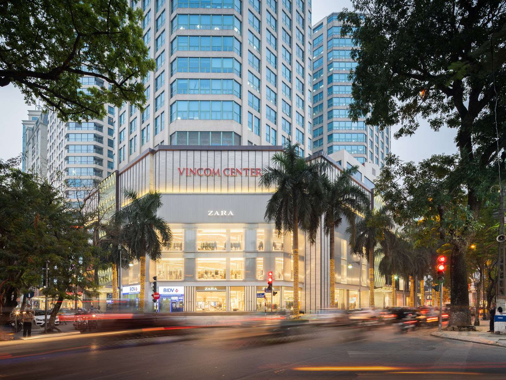

Food will be the first things that you would like to check out!
There are so many different kinds of them but the most famous one is pho bo
However, if you want to check out something new then bun cha, bun rieu or bun dau should be on your list!

One of the most hisotrically place in Hanoi is Ho Guom.
Hanoi is a capital of Vietnam therefore there will be a lot of historical places attach with it.
you would love to see the lake and Te Huc bridge where is the temple of Ho Guom symbol.

After check out with Ho Guom, you can directly go to 36 pho phuong Ha noi
These street help you more understand about Vietnamese culture and what do we usually do in daily life.

This place called Hanoi Temple of Literature.
It was the first university created in Vietname where allowed the middle-class boy can study.
Until now day, people usually come here to wish for next school year luck, especially wish for exams.

Of course we can't miss out the shopping mall in the middle of the city.
The most popular place in Hanoi is Trang Tien plaza, but people usually choose to go to Vincom
This place usuallt have the playground for kids so the parents don't really have to worry that their children will be bored.